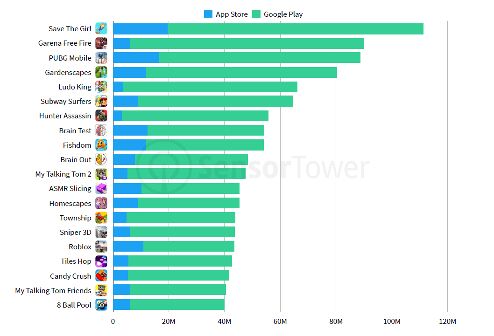

With over 3.2 billion smartphone users across the world, it’s no surprise that the mobile app industry is thriving. App usage and smartphone penetration are still growing at a steady rate, without any signs of slowing down in the foreseeable future.
Now factor in the 1.14 billion tablet users worldwide, which a number that’s grown about 36% over the past six years.
If you take a second to look up from your phone during the day, I’m sure you’ll notice that everyone else has their eyes glued to a mobile device as well.
In fact, studies show that the average American checks their phone every 12 minutes. 10% of people check their phones once every four minutes.
We use our phones at work, at home, on the street, while we’re eating, in bed, and even in our cars. You might be reading this from a mobile device right now.
What’s everyone doing on their phones? Well, 88% of mobile time is spent on apps.
This is encouraging news for app developers, app publishers, and anyone who plans on developing an app. But in order to be successful in this space, two things need to happen.
1.Users need to download your app.
2.Users need to use your app.
These two seemingly simple actions are what inspired me to write this guide. Sure, we know that people are using apps more than ever before. But that’s just barely scratching the surface in terms of the available data on this usage. You can’t develop an app based on this information alone.
That’s like saying, “People like to eat, so I’m going to open a restaurant.”
If you want to compete and claim your share of this multi-billion dollar industry, you need to have a better understanding of exactly how people are downloading and using mobile apps.
Use the research that I’ve identified in this guide to help you develop or improve your mobile app.
In the course of the last decade, the global video game market share has been climbing at a steady rate. And it seems that it won’t lose momentum any time soon.
Video games industry statistics have announced their verdict: mobile gaming is on the rise and the future of gaming is on the cloud. Most gamers are aged 18 and higher, and women are playing video games more than ever before.
It’s no secret that the mobile game market is booming. Over the last couple of years, we have seen mobile games break records and make billions in revenue.
More and more players are using mobile devices to play games. It’s convenient, simple, and fun. Plus, it allows gamers to play games wherever they are, which can’t be said for desktop or consoles.
Mobile gamer demographics are also changing and evolving. What was true about gamers just a couple of years ago is vastly different now. The mobile game market is constantly changing.

What do psychologists say about video games?
Playing video games, including violent shooter games, may boost children's learning, health and social skills, according to a review of research in American Psychologist.
The study comes out as debate continues among psychologists and other health professionals regarding the effects of violent media on youth. An APA task force is conducting a comprehensive review of research on violence in video games and interactive media and will release its findings later this year.
"Important research has already been conducted for decades on the negative effects of gaming, including addiction, depression and aggression, and we are certainly not suggesting that this should be ignored," says Isabela Granic, PhD, of Radboud University Nijmegen in The Netherlands, lead author of the article. "However, to understand the impact of video games on children's and adolescents' development, a more balanced perspective is needed."
While one widely held view maintains that playing video games is intellectually lazy, such play actually may strengthen a range of cognitive skills such as spatial navigation, reasoning, memory and perception, according to several studies reviewed in the article. This is particularly true for shooter video games, which are often violent, the authors found. A 2013 meta-analysis found that playing shooter video games improved a player's capacity to think about objects in three dimensions just as well as academic courses designed to enhance these same skills, according to the study.
"This has critical implications for education and career development, as previous research has established the power of spatial skills for achievement in science, technology, engineering and mathematics," Granic says.
This enhanced thinking was not found when playing other types of video games, such as puzzles or role-playing games.
Playing video games may also help children develop problem-solving skills, the authors said. The more adolescents reported playing strategic video games, such as role-playing games, the more they improved in problem solving and school grades the following year, according to a long-term study published in 2013. Children's creativity was also enhanced by playing any kind of video game, including violent games, but not when the children used other forms of technology, such as a computer or cell phone, other research revealed.
Simple games that are easy to access and can be played quickly, such as "Angry Birds," can improve players' moods, promote relaxation and ward off anxiety, the study said. "If playing video games simply makes people happier, this seems to be a fundamental emotional benefit to consider," said Granic. The authors also highlighted the possibility that video games are effective tools for learning resilience in the face of failure. By learning to cope with ongoing failures in games, the authors suggest that children build emotional resilience they can rely upon in their everyday lives.
Another stereotype the research challenges is the socially isolated gamer. More than 70 percent of gamers play with a friend, and millions of people worldwide participate in massive virtual worlds through video games such as "Farmville" and "World of Warcraft," the article noted. Multiplayer games become virtual social communities, where decisions need to be made quickly about whom to trust or reject and how to lead a group, the authors said. People who play video games, even if they are violent, that encourage cooperation are more likely to be helpful to others while gaming than those who play the same games competitively, a 2011 study found.